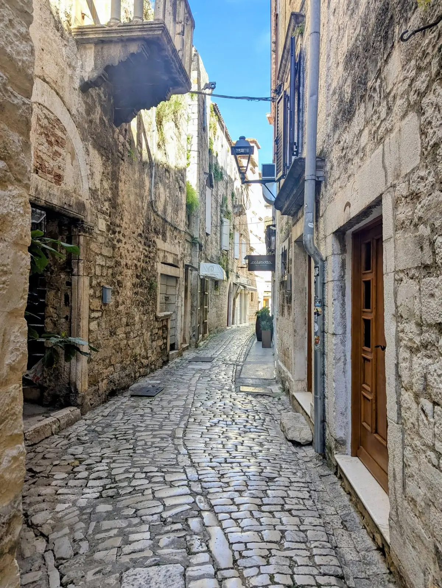

A small island town you can see in a day without rushing — here's an easy hour-by-hour plan for the old town, a swim and a great Dalmatian lunch, whether you're staying over or visiting from Split.
Cathedral, Radovan Portal and the bell tower before the crowds.
Main square, the fortress and a long konoba lunch off the square.
A swim on Čiovo, then the Riva at golden hour.
Trogir is a tiny stone island between the mainland and Čiovo, and the whole old town is a UNESCO site you can cross in ten minutes. That makes it perfect for a single, well-paced day. If you'd rather spread it out, our Trogir in 3 days itinerary adds the beaches and a day trip — but here's how to do the essentials in one.
Begin while the morning light still hits the Radovan Portal, carved in 1240 and the finest Romanesque-Gothic doorway in Croatia. Step inside for the Renaissance Chapel of the Blessed John, then climb the narrow bell tower for a sweeping view over the rooftops. Everything else on this list sits within a five-minute walk. The full rundown is on our Trogir sights guide.
Circle the square framed by the open Town Loggia, the Clock Tower and the late-Gothic Cipiko Palace. Wander out through the North (Land) Gate, crowned by the statue of the town's patron, and trace a stretch of the medieval wall down to the waterfront. It costs nothing and it's the best people-watching in town.
Walk to the western tip of the island and climb the ramparts of this 15th-century Venetian fort for the best panorama in Trogir — the old town on one side, Čiovo and the open sea on the other. In summer it hosts open-air concerts and film nights.
The prettiest restaurants ring the square, but the good food is one street back. Step off the main drag and you'll eat better for less.
Find a traditional Dalmatian tavern on a quiet lane for grilled daily catch, black risotto or slow-cooked peka, with a carafe of house wine. Our where-to-eat guide covers what to order and how to spot a tourist trap — skip the laminated picture menus and ask for the catch of the day by weight.
Cross the bridge to Čiovo for a swim. Lively Okrug Gornji ("Copacabana") has bars and loungers a short walk or taxi away, or head to a quieter cove for clear water and pine shade. See the options in our best beaches in Trogir guide.
Back in the old town, join the evening passeggiata along the Riva promenade as the stone turns gold. An ice cream, a glass of wine and a slow lap of the waterfront is the most Trogir way to end the day.
Trogir is an easy 20–30 minutes from Split by bus line 37, car or summer catamaran, and minutes from the airport. The relaxed way to combine both is a guided tour or a boat trip that includes Trogir — or hire a car and go at your own pace.
Trogir tours from Split →* Affiliate links to GetYourGuide / Discover Cars — free for you; we may earn a small commission.
One day shows you why people linger. A night in or beside the old town means quiet mornings and the Riva after the day-trippers leave — see our best hotels in Trogir guide.
* Affiliate link to Booking.com — free for you; we earn a small commission on a booking.
Yes — the old town is tiny and walkable, so one day is enough to see the cathedral, the fortress and the main square, fit in a swim and enjoy a proper lunch. If you want beaches plus a day trip too, stay two or three days.
Easily. Trogir is about 20–30 minutes from Split by bus line 37, car or a summer catamaran, and roughly 5–10 minutes from Split Airport. Many people visit on a half- or full-day trip, often combined with a boat tour.
You can cross the whole island on foot in about 10 minutes. A relaxed loop of the main sights with photo stops takes around two to three hours, leaving plenty of time for a swim and a meal.
The Cathedral of St Lawrence and its Radovan Portal, carved in 1240. Climb the bell tower for the best rooftop view in town, then walk to Kamerlengo Fortress for the panorama over the sea.
Book a walking tour or boat trip for the easy version, or grab a hire car and explore at your own pace.